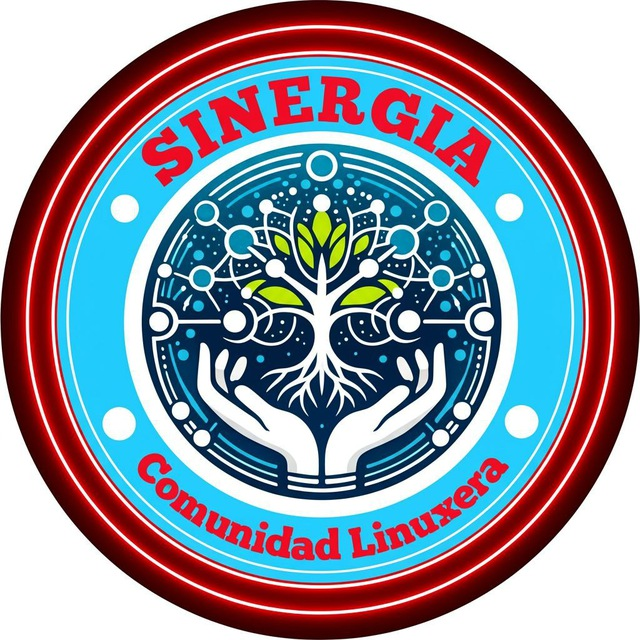

Repositorio personalizado para Arch Linux y derivados
Este repositorio es mantenido y organizado colectivamente por la comunidad de Sinergia Comunidad Linuxera. Un espacio impulsado por usuarios y entusiastas del software libre coordinados activamente a través de Telegram.
Para que pacman pueda verificar la firma de los paquetes y las bases de datos, importa y firma la clave pública del repositorio ejecutando:
curl -sS https://raw.githubusercontent.com/Nacho-Telmo/sinergia-repo/main/sinergia.gpg | sudo pacman-key -a -
sudo pacman-key --lsign-key 4CBFA5A14BB153A7Edita tu archivo /etc/pacman.conf y agrega al final las siguientes líneas:
[sinergia]
SigLevel = Required DatabaseOptional
Server = https://raw.githubusercontent.com/Nacho-Telmo/sinergia-repo/main/x86_64Luego, sincroniza las bases de datos de paquetes ejecutando:
sudo pacman -SyListado completo de los 17 paquetes disponibles en el repositorio:
| Paquete | Descripción | Comando de Instalación |
|---|---|---|
better-iptv-bin |
Reproductor IPTV ligero y funcional para Linux. | sudo pacman -S better-iptv-bin |
flextile-git |
Layout de tiling dinámico flexible para gestores de ventanas en X11/Suckless. | sudo pacman -S flextile-git |
kirigami2 |
Set de componentes de UI basados en QtQuick para aplicaciones KDE. | sudo pacman -S kirigami2 |
konvi |
Herramienta de conversión multimedia ligera. | sudo pacman -S konvi |
plasma-framework5 |
Librerías y componentes de la estructura de Plasma 5. | sudo pacman -S plasma-framework5 |
plasma-panel-transparency |
Widget/Script para ajustar la transparencia del panel de Plasma. | sudo pacman -S plasma-panel-transparency |
sddm-theme-sinergia |
Tema de inicio de sesión SDDM con diseño oficial de Sinergia. | sudo pacman -S sddm-theme-sinergia |
sinergia-appimage-manager |
Gestor e integrador de aplicaciones AppImage escrito en Python y PyQt6. | sudo pacman -S sinergia-appimage-manager |
sinergia-conky |
Configuración de Conky para monitoreo de sistema de la comunidad. | sudo pacman -S sinergia-conky |
sinergia-dd-burner |
Herramienta gráfica ligera para grabar imágenes ISO en pendrives USB mediante dd. |
sudo pacman -S sinergia-dd-burner |
sinergia-keyring |
Llavero oficial con las claves GPG de validación del repositorio Sinergia. | sudo pacman -S sinergia-keyring |
sinergia-plasma-full |
Meta-paquete con la experiencia y personalización completa de Plasma por Sinergia. | sudo pacman -S sinergia-plasma-full |
sinergia-reflector-top |
Utilidad GUI para refrescar, probar y seleccionar los mirrors más rápidos de Arch Linux. | sudo pacman -S sinergia-reflector-top |
sinergia-webapp-manager |
Administrador e integrador de WebApps en el menú de aplicaciones del sistema. | sudo pacman -S sinergia-webapp-manager |
stacer-bin |
Optimidador y monitor de rendimiento de sistema con interfaz gráfica. | sudo pacman -S stacer-bin |
vortex-dark-icons |
Tema de íconos oscuros optimizado para escritorios KDE Plasma/XFCE. | sudo pacman -S vortex-dark-icons |
yaru-colors-icon-theme |
Tema de íconos Yaru-Colors adaptado con base oficial y fix de herencia para KDE Plasma. | sudo pacman -S yaru-colors-icon-theme |